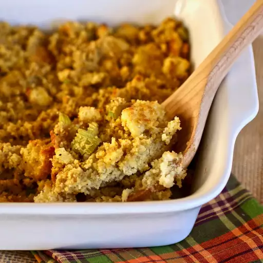

Grandma's Cornbread Dressing

My grandmother always made this cornbread dressing for holiday dinners and for family gatherings at other times of the year. Use your favorite cornbread mix to make a batch of cornbread, and then crumble it for use in this family-favorite recipe. I hope you enjoy it as much as I have!
ingredients
- Cornbread
- Butter
- Vegetables
- Eggs
- Stock
- Seasoning
Steps
- Sauté the vegetables in butter until soft.
- Add the sautéed vegetables to the crumbled cornbread.
- Stir in the remaining ingredients and mix until well-combined.
- Transfer the dressing to a prepared baking dish and bake until golden brown.